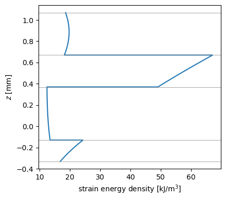

Matrices of the third-order shear deformation theory#
A finite element or Ritz model of the third-order shear deformation theory (TSDT) needs the constitutive matrix of all its generalized strains. This example assembles that \(13 \times 13\) matrix from the matrices of a Laminate and verifies it against the strain energy integrated ply by ply through the thickness, see Laminate stiffness and plate theories.
Theory#
In the TSDT of Reddy [1] the in-plane displacements have a cubic term in \(z\), chosen such that the transverse shear strains vanish at the faces, and the strains are written with the generalized strains of the reference surface,
with \(\varepsilon = \{\varepsilon_{xx}, \varepsilon_{yy}, \gamma_{xy}\}\) and \(\gamma = \{\gamma_{yz}, \gamma_{xz}\}\). The strain energy per unit area is
where, substituting the strains, \(K\) collects the integrals \((A, B, D, E, F, H) = \sum_k \int C^{(k)} (1, z, z^2, z^3, z^4, z^6) dz\) and \((\bar{A}_{ts}, D_{ts}, F_{ts}) = \sum_k \int C_s^{(k)} (1, z^2, z^4) dz\) in the layout of the section “Assembling the matrices in a model” of Laminate stiffness and plate theories. The TSDT satisfies the traction-free conditions at the faces and uses the uncorrected \(\bar{A}_{ts}\), not the corrected
Ats of the FSDT.
[1]:
%matplotlib inline
import numpy as np
import matplotlib.pyplot as plt
from composites import laminated_plate
def print_table(rows):
"""Print each result, its reference value and their relative difference
``rows`` holds ``(name, value, reference)`` or ``(name, value, reference,
scale)``; the difference is divided by ``scale``, by default the absolute
value of the reference, e.g. the largest term of the matrix when the
reference is zero.
"""
print('%-36s %14s %14s %10s' % ('quantity', 'composites', 'reference',
'rel. diff.'))
for row in rows:
name, value, ref = row[:3]
scale = row[3] if len(row) > 3 else abs(ref)
print('%-36s % 14.6e % 14.6e %10.1e' % (name, value, ref,
abs(value - ref)/scale))
Assembling the constitutive matrix#
The laminate is unsymmetric and has an offset, so that \(B\) and \(E\) are not zero and every block of \(K\) contributes. Each block is symmetric, so \(K\) is symmetric.
[2]:
laminaprop = (142e9, 8.7e9, 0.28, 5.1e9, 5.1e9, 3.2e9)
lam = laminated_plate([0, 45, 90, -30], plyts=[0.2e-3, 0.5e-3, 0.3e-3,
0.4e-3], laminaprop=laminaprop, offset=0.37e-3)
# generalized strains {eps0, eps1, eps3, gamma0, gamma2}
Z32 = np.zeros((3, 2))
K = np.block([[lam.A, lam.B, lam.E, Z32, Z32],
[lam.B, lam.D, lam.F, Z32, Z32],
[lam.E, lam.F, lam.H, Z32, Z32],
[Z32.T, Z32.T, Z32.T, lam.Abar_ts, lam.Dts],
[Z32.T, Z32.T, Z32.T, lam.Dts, lam.Fts]])
print('K.shape =', K.shape)
print('max |K - K^T| =', np.abs(K - K.T).max())
K.shape = (13, 13)
max |K - K^T| = 0.0
Verification with the strain energy#
For five random generalized strains \(e\), \(e^T K e/2\) is compared with \(U\) integrated through the thickness with six Gauss-Legendre points per ply, using the \(5 \times 5\) matrix of Lamina.get_constitutive_matrix, which holds \(C^{(k)}\) and \(C_s^{(k)}\) of a ply in the laminate axes, see Ply constitutive relations and invariants. The integrand is a polynomial of degree 6 in \(z\), which this rule integrates exactly, so the two agree to
round-off. The strains are scaled with \(1/h\), \(1/h^3\) and \(1/h^2\) such that all the terms contribute to \(U\) with similar magnitudes.
[3]:
rng = np.random.default_rng(1)
h = lam.h
scale = np.array(3*[1.] + 3*[1/h] + 3*[1/h**3] + 2*[1.] + 2*[1/h**2])
xi, w = np.polynomial.legendre.leggauss(6)
zbot = -h/2 + lam.offset
rows = []
for i in range(5):
e = 1e-3*rng.uniform(-1, 1, 13)*scale
U = 0.
zk = zbot
for ply in lam.plies:
C = np.asarray(ply.get_constitutive_matrix())
for x, wi in zip(xi, w):
z = zk + ply.h*(x + 1)/2
eps = e[0:3] + z*e[3:6] + z**3*e[6:9]
gamma = e[9:11] + z**2*e[11:13]
U += wi*ply.h/2*0.5*(eps @ C[:3, :3] @ eps
+ gamma @ C[3:, 3:] @ gamma)
zk += ply.h
rows.append(('strain %d: e^T K e/2 vs U [J/m^2]' % (i + 1),
0.5*e @ K @ e, U))
print_table(rows)
quantity composites reference rel. diff.
strain 1: e^T K e/2 vs U [J/m^2] 5.277895e+01 5.277895e+01 0.0e+00
strain 2: e^T K e/2 vs U [J/m^2] 1.683985e+01 1.683985e+01 2.1e-16
strain 3: e^T K e/2 vs U [J/m^2] 4.530303e+01 4.530303e+01 0.0e+00
strain 4: e^T K e/2 vs U [J/m^2] 5.435136e+01 5.435136e+01 0.0e+00
strain 5: e^T K e/2 vs U [J/m^2] 3.552772e+01 3.552772e+01 2.0e-16
Strain energy density through the thickness#
For the last strain \(e\), the strain energy density per unit volume shows the contribution of each ply; the ply interfaces are marked. Its integral over the thickness is the \(U\) of the last row above.
[4]:
zs, dens = [], []
zk = zbot
for ply in lam.plies:
C = np.asarray(ply.get_constitutive_matrix())
for z in np.linspace(zk, zk + ply.h, 41):
eps = e[0:3] + z*e[3:6] + z**3*e[6:9]
gamma = e[9:11] + z**2*e[11:13]
zs.append(z)
dens.append(0.5*(eps @ C[:3, :3] @ eps + gamma @ C[3:, 3:] @ gamma))
zk += ply.h
fig, ax = plt.subplots(figsize=(4.5, 4))
ax.plot(np.array(dens)/1e3, np.array(zs)*1e3)
for zi in zbot + np.cumsum([0] + [ply.h for ply in lam.plies]):
ax.axhline(zi*1e3, color='gray', lw=0.5)
ax.set_xlabel('strain energy density [kJ/m$^3$]')
ax.set_ylabel('$z$ [mm]')
fig.tight_layout()
plt.show()

References#
Reddy, J. N., Mechanics of Laminated Composite Plates and Shells: Theory and Analysis, 2nd ed., CRC Press, 2003. https://doi.org/10.1201/b12409